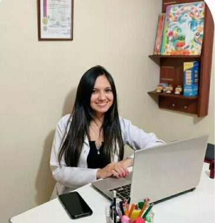

Acerca de PsicoAmaru
Especialistas
Karla Salazar
Psicóloga especializada en psicología infantil y psicorreabilitación. Con años de experiencia ayudando a niños y adolescentes a superar desafíos emocionales y psicológicos.
Cristina Andrade
Psicóloga con especialización en psicología infantil y terapias de rehabilitación. Comprometida con el bienestar y desarrollo emocional de sus pacientes.
Historia del Negocio
PsicoAmaru fue fundado en el año 2020 por dos amigas graduadas de la UCE, dos psicólogas con más de 4 años de experiencia en el campo de la psicología infantil y la psicorreabilitación. Desde sus inicios, PsicoAmaru ha estado comprometido con brindar un apoyo integral y profesional a niños y sus familias, ayudándoles a superar desafíos y mejorar su bienestar emocional y psicológico.
A lo largo de los años, PsicoAmaru ha crecido y se ha adaptado a las necesidades cambiantes de la comunidad, ofreciendo no solo consultas presenciales, sino también servicios de videollamadas para mayor comodidad y accesibilidad. Nuestro equipo está compuesto por especialistas altamente capacitados que se dedican a proporcionar una atención personalizada y de calidad.
Nuestra misión es proporcionar un espacio seguro y acogedor donde los niños y sus familias puedan encontrar el apoyo que necesitan para crecer y prosperar. Creemos firmemente en el poder de la psicología para transformar vidas y estamos aquí para acompañar a nuestros clientes en cada paso del camino.
Propósito de la Página
El propósito de PsicoAmaru es proporcionar un recurso confiable y accesible para las familias que buscan apoyo psicológico para sus hijos. Nos esforzamos por ofrecer servicios de alta calidad en psicología infantil y psicorreabilitación, ayudando a los niños a superar desafíos emocionales y conductuales. Además, brindamos una plataforma educativa a través de artículos y recursos informativos para empoderar a los padres y cuidadores con conocimientos valiosos.